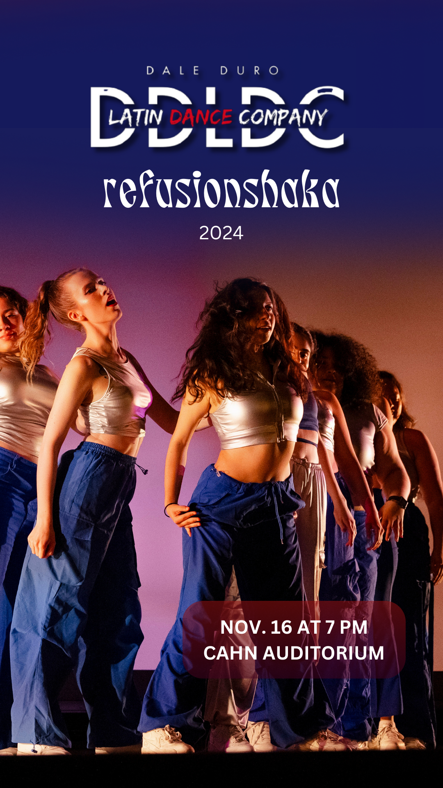
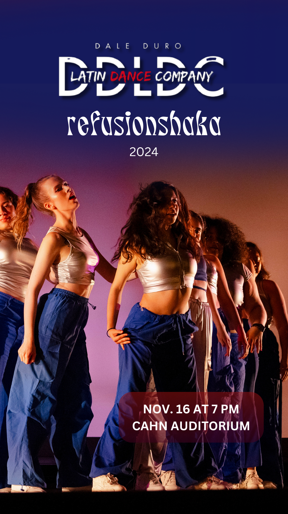

Dale Duro Latin Dance Company
From lights to likes: powering Dale Duro’s visual identity & show campaigns at Northwestern.
Time Frame
May 2024 – Present
Location
Evanston, IL
Role
PR & Visuals, In the Show Committee
Team
Dale Duro Latin Dance Company
Skills
Overview
Dale Duro is a Latin dance company at Northwestern. Since joining the PR committee in Spring 2024, I’ve been leading design direction and promotional strategy for performances, auditions, and showcases.
How do you translate rhythm, energy, and cultura into graphic form?
My work spans Instagram promo design, in-show graphics, photography, and overall visual cohesion for the brand. From high-energy campaigns to elegant audition posts, I collaborate closely with the team to make every performance feel like an event.
My Contributions
- Led the design and rollout of the Refusionshaka campaign and visuals
- Produced graphic assets for auditions, info sessions, and announcements
- Helped build a consistent visual brand for Dale Duro across seasons
- Contributed to marketing brainstorms and content planning
- Supported in-stage visuals and photography during live events
Campaign Highlights

 



Reflections
Designing for Dale Duro is pure joy—vibrant, loud, fast-paced, and full of expression. It’s about honoring Latin culture, while turning every flyer and post into a bold celebration. From behind-the-scenes planning to spotlight design moments, this role pushes me creatively and culturally.